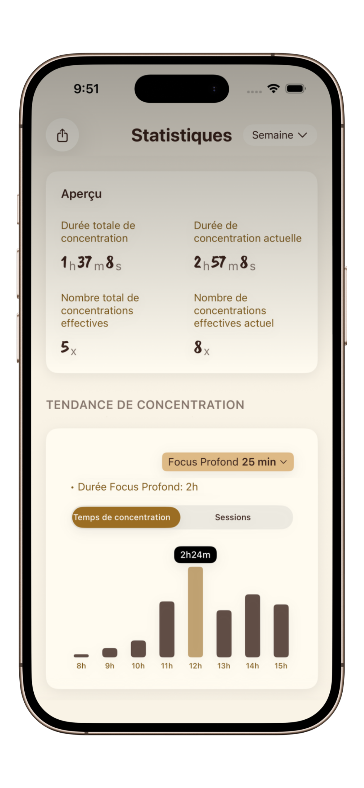

Comment rester concentré pour réviser : Le guide étudiant 2026
Arrêtez de scroller et entrez dans le flow. Découvrez des techniques scientifiques pour transformer vos révisions en blocs de focus ultra-productifs.
On connaît tous ça : vous ouvrez votre manuel, mais cinq minutes plus tard, vous scrollez sur les réseaux sociaux. Pour les étudiants en 2026, la bataille pour l'attention est plus rude que jamais. Pourtant, rester concentré n'est pas une question de volonté, mais de design de système.
Pourquoi la méthode traditionnelle échoue
La plupart des étudiants essaient de forcer le focus en restant assis pendant 4 heures d'affilée. Cela mène à la fatigue cognitive et à une baisse de rendement. Votre cerveau est un muscle ; il a besoin d'un cycle rythmique d'effort et de récupération.


3 Astuces d'Étude basées sur la Science
1. Le Rythme Pomodoro (Règle du 25/5)
Utilisez un minuteur comme PurrrrrFocus pour vous engager sur seulement 25 minutes de travail profond. Savoir qu'une fin est proche réduit la "douleur du démarrage" qui cause la procrastination.
2. Rappel Actif et Répétition Espacée
Ne vous contentez pas de relire vos notes. Fermez le livre et testez-vous. Couplez ces sprints mentaux intenses avec un minuteur zen pour garder votre élan.
3. Environnement de Détox Digitale
Votre téléphone est une "machine à sous à dopamine". Activez le Mode Focus Élite dans l'application pour vous décourager d'utiliser votre téléphone pendant vos révisions.
Pourquoi PurrrrrFocus est le favori des étudiants
Contrairement aux apps de productivité colorées qui ressemblent à des jeux, PurrrrrFocus utilise une esthétique de lavis à l'encre orientale. Cette approche "Zen" fait baisser le taux de cortisol — essentiel pendant les périodes d'examens stressantes.
- Calme Oriental : Le style minimaliste à l'encre ne distraira pas votre vision périphérique.
- Compagnon Chat : Réviser pour les partiels peut être solitaire. Votre chat de focus est là pour vous tenir compagnie, respirant lentement pour vous aider à rester serein.
- Sync iCloud : Passez de votre iPad à la bibliothèque à votre iPhone en déplacement sans perdre votre série de focus.
Transformez votre prochaine session d'étude
Rejoignez plus de 50 000 étudiants qui utilisent PurrrrrFocus pour vaincre l'anxiété des examens et protéger leur état de flow.
Télécharger PurrrrrFocus GratuitementCréer votre "Sanctuaire de Focus"
Pour rester concentré, vous avez besoin d'un rituel. Rangez votre bureau, prenez un verre d'eau, ouvrez PurrrrrFocus et choisissez votre compagnon chat. Cela dit à votre cerveau : "La session a commencé. Nous sommes maintenant en mode travail profond."